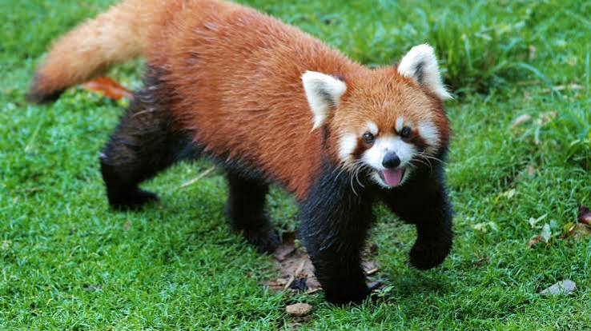
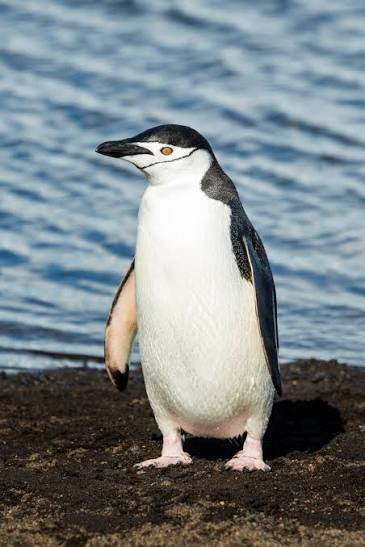

Red Panda
Red pandas are soft reddish-brown furred with black legs and bellys. Their faces are white with brown tear patterns under the eyes. They can grow up to around 25 inches long!

The Central Park Zoo has red pandas!
Penguin
Penguins are flightless birds with black backs and white bellys to help them camouflage in the water. They can grow up to around 4 feet tall!

the Saint Louis Zoo has penguins!